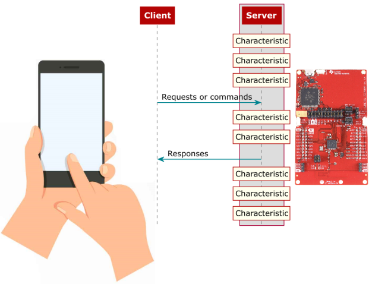

基于 GATT 的 BLE HID 设备#
实验目的#
本实验实现基于 GATT 的 BLEHID Device , 即 BLE 的设备模式。
❗ 注意
本实验需要 Android bluebird 协议栈支持，不支持非 Android 手机
GATT BLE HID 介绍#
GATT（Generic Attributes Profile）的缩写，中文是通用属性协议，是已连接的低功耗蓝牙设备之间进行通信的协议。
一旦两个设备建立起了连接，GATT 就开始起作用了，这也意味着，你必需完成前面的 GAP 协议。
GATT 使用了 ATT（Attribute Protocol）协议，ATT 协议把 Service，Characteristic 对应的数据保存在一个查找表中，查找表使用 16bit ID 作为每一项的索引。
从 GATT 的角度来看，处于连接状态时的两个设备，它们各自充当两种角色中的一种：
服务端（Server）
包含被 GATT 客户端读取或写入的特征数据的设备。
客户端（Client）
从 GATT 服务器中读取数据或向 GATT 服务器写入数据的设备。
外围设备（从机）作为 GATT 服务端（Server），它维持了 ATT 的查找表以及 service 和 characteristic 的定义；
客户端和服务器的 GATT 角色独立于外围设备和中央设备的 GAP 角色。外围设备可以是 GATT 客户端或 GATT 服务器，中心可以是 GATT 客户端或 GATT 服务器。 
在 ESP-IDF 中，使用经过大量修改后的 BLUEDROID 作为蓝牙主机 (Classic BT + BLE)。BLUEDROID 拥有较为完善的功能，⽀持常用的规范和架构设计，同时也较为复杂，所以在此不再赘述，感兴趣的同学可以前往乐鑫官网 ESP-IDF 编程指南 中查看。
实验内容#
本例实现了一个 BLE HID 设备配置文件相关功能，其中 HID 设备有 4 个类型：
鼠标
键盘和 LED
消费类设备
供应商设备
用户可以根据自己的应用场景选择不同的类型。BLE HID 配置文件继承和 USB HID 类。
文件说明#
ble_hidd_demo_main.c此文件是演示如何使用 HID（您可以将其连接到智能手机充当消费设备，然后可以使用按钮来音量++或音量–等，或连接到 Windows 10 PC 行为作为键盘或鼠标）hidd_le_prf_int.h此头文件包含一些与 HID 配置文件相关的定义。esp_hidd_prf_api.h&esp_hidd_prf_api.c这些文件包含 HID 配置文件的 api 当您使用 HID 配置文件时，您只需添加 esp_hidd_prf_api.h 包含文件并使用esp_hidd_prf_api.c文件中定义的函数发送 HID 数据。hid_dev.h&hid_dev.c这些文件定义了 HID 规范相关的定义hid_device_le_prf.c该文件是 HID 配置文件定义文件，它包含了 HID 配置文件的主要功能。主要包括如何创建 HID 服务。如果您发送和接收 HID 数据并将数据转换为键盘键，则鼠标和使用者值将转发到应用程序。
构建和烧录#
构建项目并将其烧写到板上，然后运行监控工具查看串行输出：
命令行界面：#
idf.py -p PORT flash monitor （要退出串行监视器，请键入 Ctrl-]。）
Clion 界面：#
选择 flash 并运行
选择 monitor 并运行
示例输出#
假如此时将手机蓝牙连接至 esp32，esp32 将会去控制手机的音量增至最大和减小至最小
监视器中会有类似如下输出:
I (0) cpu_start: Starting scheduler on APP CPU.
I (584) BTDM_INIT: BT controller compile version [1342a48]
I (584) system_api: Base MAC address is not set
I (584) system_api: read default base MAC address from EFUSE
I (594) phy_init: phy_version 4670,719f9f6,Feb 18 2021,17:07:07
I (1024) HID_LE_PRF: esp_hidd_prf_cb_hdl(), start added the hid service to the stack database. incl_handle = 40
I (1034) HID_LE_PRF: hid svc handle = 2d
I (5964) HID_LE_PRF: HID connection establish, conn_id = 0
I (5964) HID_DEMO: ESP_HIDD_EVENT_BLE_CONNECT
I (6744) HID_DEMO: remote BD_ADDR: 7767f4abe386
I (6744) HID_DEMO: address type = 1
I (6744) HID_DEMO: pair status = success
I (8024) HID_DEMO: Send the volume
I (16024) HID_DEMO: Send the volume
I (24024) HID_DEMO: Send the volume
I (27784) HID_DEMO: ESP_HIDD_EVENT_BLE_DISCONNECT
源代码参考#
参见参考资料与源代码